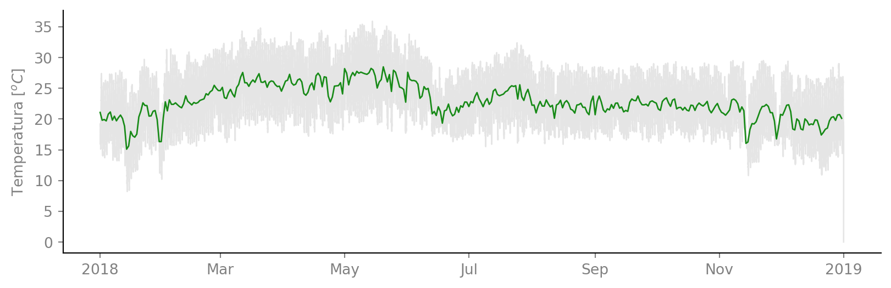
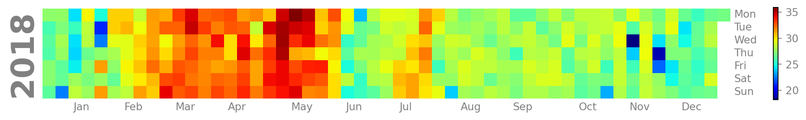
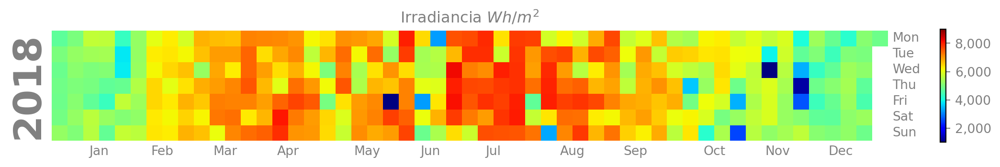
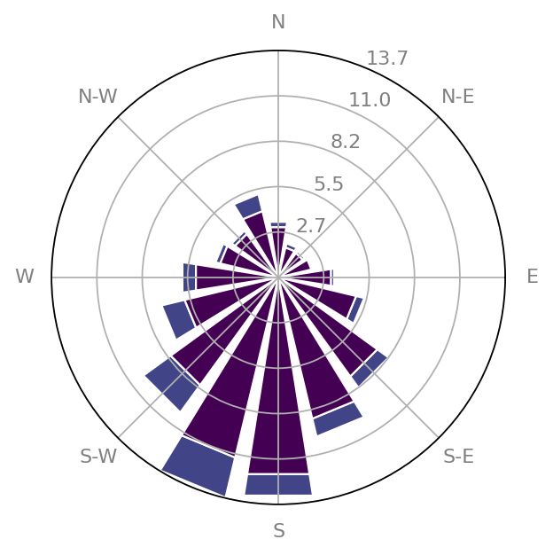
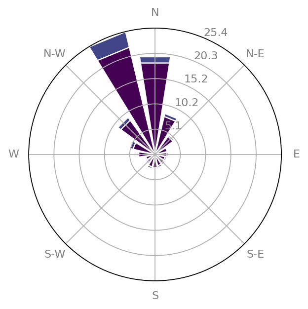

import pandas as pd
from iertools.read import read_epw
import matplotlib.pyplot as plt
import matplotlib.dates as mdates
import calplot
import matplotlib.ticker as ticker
from windrose import WindroseAxes
plt.style.use('../notebooks/enerdata_rectangle.mplstyle')Clima en Temixco, Morelos, México
Analisis de clima en Temixco, Morelos, México
Temperatura ambiente horaria
La temperatura en Temixco puede ir de alrededor los 10 \(^oC\) a los 35 \(^oC\) durante todo el año, como se ve en la Figura 1. La temperatura anual promedio en Temixco es {python} promedio.round(1).

Temperaturas máximas diarias y energía solar diaria
Las máximas temperaturas se presentan entre los meses de abril y mayo, como se puede ver en la Figura 2. Es en julio y agosto cuando se tiene la mayor radiación solar en el año, como se ve en la Figura 3.
findfont: Font family 'Helvetica' not found.
findfont: Font family 'Helvetica' not found.
findfont: Font family 'Helvetica' not found.
findfont: Font family 'Helvetica' not found.
findfont: Font family 'Helvetica' not found.
findfont: Font family 'Helvetica' not found.
findfont: Font family 'Helvetica' not found.
findfont: Font family 'Helvetica' not found.
Código
cal, cax =calplot.calplot(tmx.Ig.resample('D').sum()*1/6,
linewidth=0,
cmap='jet',colorbar=None,
vmin=1000,
vmax=9000);
cal.axes[0].set_title('Irradiancia $Wh/m^2$');
def format_func(x, pos):
return f'{x:,.0f}' # Añade separadores de miles, sin decimales
# Usa FuncFormatter con la función de formato definida anteriormente
formatter = ticker.FuncFormatter(format_func)
# Aplica el formatter al colorbar
cax = plt.gcf().axes[-1] # Asumiendo que el colorbar es el último eje añadido
cax.yaxis.set_major_formatter(formatter)findfont: Font family 'Helvetica' not found.
findfont: Font family 'Helvetica' not found.
findfont: Font family 'Helvetica' not found.
findfont: Font family 'Helvetica' not found.
findfont: Font family 'Helvetica' not found.
findfont: Font family 'Helvetica' not found.
findfont: Font family 'Helvetica' not found.
findfont: Font family 'Helvetica' not found.
Rosa de vientos para Temixco, Morelos
La estación meteorológica se encuentra ubicada en el Instituto de Energías Renovables de la UNAM, y la orografía de ese sitio causa que la dirección dominante del viento cambie durante el día y la noche. En el día los vientos dominantes tienen una dirección de Sur a Norte como se ve en la Figura 4 (a) y de Norte a Sur, como se ve en la Figura 4 (b).

